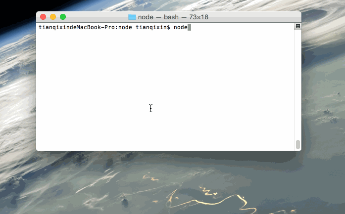

Node.js REPL (Interactive Interpreter)
Node.js provides a built-in REPL (Read-Eval-Print Loop), which is an interactive programming environment that can run JavaScript code in the terminal.
The name REPL comes from its main operations: Read, Eval, Print, and Loop.
Node comes with an interactive interpreter that can perform the following tasks:
Read- Read user input, parse the input Javascript data structure and store it in memory.
Eval- Execute the input data structure
Print- Output the result
Loop- Loop through the above steps until the user presses the button twicectrl-cto exit.
REPL allows you to directly enter and immediately execute JavaScript code, quickly verifying code snippets.
REPL is suitable for testing simple logic, debugging, and trying out new syntax or Node.js APIs.
Start learning REPL
We can enter the following command to start Node's terminal:
node
After execution, the following content appears:
# node Welcome to Node.js v20.1.0. Type ".help" for more information. >
At this point, we can>enter simple expressions after the prompt and press the Enter key to calculate the result.
Simple expression evaluation
Next, let's perform some simple math operations in the Node.js REPL command line window:
$ node > 1 +4 5 > 5 / 2 2.5 > 3 * 6 18 > 4 - 1 3 > 1 + ( 2 * 3 ) - 4 3 >
Using variables
You can store data in variables and use it when you need it.
Variable declaration requires thevarkeyword. If the var keyword is not used, the variable will be printed directly.
Using thevarkeyword, you can use console.log() to output the variable.
$ node
> x = 10
10
> var y = 10
undefined
> x + y
20
> console.log("Hello World")
Hello World
undefined
> console.log("www.runoob.com")
www.runoob.com
undefined
Multi-line expressions
Node REPL supports entering multi-line expressions, which is somewhat similar to JavaScript. Next, let's execute a do-while loop:
$ node
> var x = 0
undefined
> do {
... x++;
... console.log("x: " + x);
... } while ( x < 5 );
x: 1
x: 2
x: 3
x: 4
x: 5
undefined
>
...The three-dot symbol is automatically generated by the system; you just press Enter to start a new line. Node will automatically detect whether it is a continuous expression.
Underscore (_) variable
You can use the underscore (_) to get the result of the previous expression:
$ node > var x = 10 undefined > var y = 20 undefined > x + y 30 > var sum = _ undefined > console.log(sum) 30 undefined >
REPL commands
Summary table of common commands and shortcuts in Node.js REPL:
| Command/Shortcut | Description |
|---|---|
.help | Displays all available commands in the REPL and their descriptions. |
.exit | Exits the REPL session, equivalent to pressingCtrl + D。 |
.save <filename> | Saves the current REPL session to a specified file. |
.load <filename> | Loads and executes code from a specified file into the REPL. |
.break | Exits multi-line expression input mode and returns to single-line input mode. |
.clear | Resets the REPL context, equivalent to clearing all variables and state. |
Ctrl + C | Forcefully exits the current input or terminates the command. If pressed twice, it exits the REPL session. |
Ctrl + D | Ends the REPL session, equivalent to.exit。 |
Ctrl + L | Clears the screen, similar to enteringclear。 |
方向键（↑/↓） | Browse input history, view and re-execute previously entered commands. |
Tab | Auto-complete input, display possible options or complete commands. |
_ | Used to access the result of the previous expression. |
Ctrl + R | Enter reverse history search to search for previously entered commands. |
Ctrl + U | Delete all content from the cursor to the beginning of the current line. |
Ctrl + K | Delete all content from the cursor to the end of the current line. |
Ctrl + A | Move the cursor to the beginning of the line. |
Ctrl + E | Move the cursor to the end of the line. |
Ctrl + B | Move the cursor back one character. |
Ctrl + F | Move the cursor forward one character. |
Ctrl + N | Show the next history entry (same as the Down arrow key). |
Ctrl + P | Show the previous history entry (same as the Up arrow key). |
Ctrl + Z | Suspend the REPL session and put it in the background (available on some systems). |
Stop REPL
Earlier we mentioned that pressing twicectrl + cthe key will exit the REPL:
$ node > (^C again to quit) >
Advanced REPL features
- Auto-completion: Enter part of the code and press
Tab, and the REPL will try to complete it or show possible options. - Result caching: The REPL automatically saves the result of the last execution to a special variable
_. For example:> 5 + 5 10 > _ * 2 20
Gif example demonstration
Next, we will demonstrate the example operations using a Gif image:

Other extensions